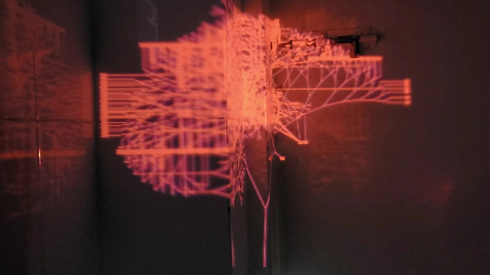

2024/6 Spatial Perception Model Based on Cybernetics. Using Rhino/gh and puredata to create a feedback building system, the building layout can be transformed into an audio-visual experience. The work was exhibited at the Beiqiu Contemporary Art Museum in Nanjing in July 2024.